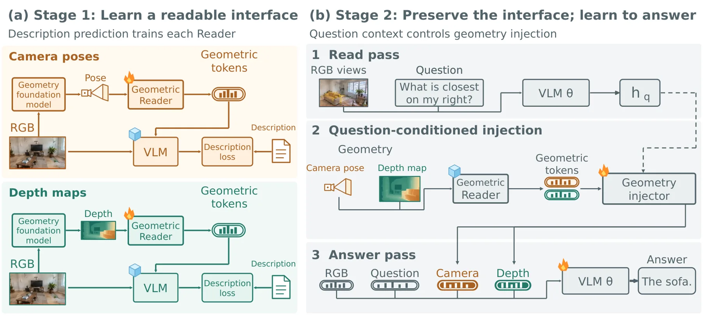

GeoReader：为视觉语言模型学习「能被读、且会被用」的隐几何
GeoReader: Learning Latent Geometry for Spatial Reasoning in Vision-Language Models
两阶段：Stage 1 用冻结 VLM 的「几何描述」损失训练 Geometric Reader（深度用 Depth Anything 3 预测的位姿与深度，每视图每信号产出一个连续 token，pair 监督下只喂参考视图与目标视图以避免歧义）；Stage 2 冻结 Reader，先跑一次只含图像与问题的 read pass 得到 h_q，再用问题条件化门控 g_m=σ(R_m(h_q)) 把适配后的几何 token 加到占位槽嵌入上，只微调语言模型与注入器。MindCube-Tiny 1050 题（Qwen2.5-VL-3B）消融：仅 Stage 1 41.4、仅 QA 54.7、两阶段 89.2；可读性预训练 76.4 高于特征对齐 62.7；pair 监督 89.2 高于 group 77.8；置零几何残差 89.2→77.2、打乱跨视图位姿 89.2→63.1，而对齐模型做同样干预几乎不变。
MindCube-Tiny accuracy
six-benchmark average
two-stage vs QA-only
accuracy after shuffling poses
作者、单位与技术谱系 · Research context
作者与单位
研究脉络
- Depth Anything 3 等几何基础模型方法基座关系：GeoReader 的几何来源是 DA3 从 RGB 预测的相机位姿与深度；消融则换成数据集标注几何，用同一框架对比「估计几何 vs 真值几何」。[官方 HTML 全文（第 4.1 节、附录 A.1.3）]
- 3DThinker 式特征对齐（含已发布 checkpoint）方法上游（主要对照）关系：论文把「让 VLM latent 对齐几何特征」视为主要竞争路线，并用其已发布 checkpoint 在同骨干、同问题上做对照，指出其 latent 对答案无实质影响。[官方 HTML 全文（第 4.3–4.4 节）]
- Qwen 系列 VLM 与 MindCube方法上游（骨干与基准）关系：GeoReader 在 Qwen2.5-VL / Qwen3-VL / Qwen3.5 六个骨干上使用同一配方，并以 MindCube-Tiny 作为主要消融基准。[官方 HTML 全文（第 4.1 节）]
合作网络
- 跨机构共同署名（六家单位）HKUST(GZ)、A*STAR、Peking University、National University of Singapore、HKUST、BIGAI → GeoReader 十位作者关系：共同署名 / 跨机构[arXiv 官方 HTML（首页作者与单位）]
- 代码与项目页GeoReader → github.com/iris0329/GeoReader 与 iris0329.github.io/georeader-homepage关系：官方代码/项目页（可核验）[arXiv 官方 HTML（摘要页注释）]
- 对几何骨干与基准数据的依赖GeoReader 训练/评测 → Depth Anything 3、MindCube、ScanNet / ScanNet++、VSI-Bench 等关系：官方模型/数据集依赖[官方 HTML 全文（第 4.1 节、附录 A.1）]
作者与单位来自论文首页署名（论文报告的事实）；「基座/上游」定位来自论文正文的对照设置与明确表述（基于来源的解读）；跨机构合作边以首页署名映射为据，未推断导师/师生关系；代码与项目页有论文注释给出的公开地址佐证。
方法本质拆解 · What actually changed
是不是微调？——两阶段：先训 Reader，再冻结 Reader 微调 VLM
Stage 1 训练 Geometric Reader，VLM 冻结，梯度只回传到 Reader；Stage 2 冻结 Reader，只微调语言模型与几何注入器（视觉编码器也冻结）。具体配置：Reader 训 10 epoch；Stage 2 微调 2 epoch（MindCube 上 10 epoch），学习率 2×10⁻⁵，贪心解码。因此权重确实会变，但改变的是「Reader 的接口表达能力」与「VLM 的取用能力」两件事，且两者被有意分开训练以互不破坏。
有没有额外约束？——几何 token 必须经冻结 VLM 的描述损失检验
关键约束是「几何 token 必须以接收模型能读的形式表达」：Stage 1 的监督信号是冻结 VLM 对几何描述的 teacher-forcing 损失，且只对描述中「依赖几何的内容位置」（距离、方向、角度）计损失，模板词被排除；pair 监督进一步把每个参考–目标对单独监督，消除「哪个 token 承载哪条关系」的歧义。Stage 2 中和答案通道里，几何 token 被写成「占位槽嵌入 B^m + 门控缩放后的适配几何 g_m P_m(Z^m)」，门控由问题隐状态决定；信号缺失时 g_m=0，仅保留槽嵌入以维持序列布局。
推理/后端到底做了什么？——两次通道、一次额外 read pass、不生成几何思维链
推理要跑两次通道：read pass（图像 + 问题）取最后问题 token 的隐状态 h_q 以决定各路几何的注入强度，answer pass（图像 + 问题 + 几何 token + 答案）生成回答。answer pass 复用 read pass 的 KV cache，只额外计算几何 token 与答案；几何描述完全不参与推理（只作为 Stage 1 的训练目标）。没有新的几何后端：几何来自现成的 Depth Anything 3 预测，Reader 在推理时是固定的轻量前向。
方法本质是什么？——先让几何变成「可读接口」，再让模型按问题取用
本质是把「几何注入 VLM」拆成两个可独立验证的问题：接口是否可读（由冻结 VLM 的描述损失定义），以及接口是否被用（由置零/打乱干预定义）。它改变的是几何信息进入模型的**形式与强度**（连续 token + 问题条件化门控），而不是 VLM 的视觉编码器或几何模型本身；明确没有做的是：没有生成几何思维链、没有在推理时把描述喂给模型、也没有修改几何基础模型的权重。
输入/先验 = RGB 图像 + 问题 + 由 Depth Anything 3 预测的每视图位姿与深度 + 冻结的目标 VLM；改变的位置 = 几何进入 VLM 的接口（由「特征对齐/直接融合」改为「Reader 产出的连续几何 token」）与注入强度（问题条件化门控）；约束或合并动作 = 用冻结 VLM 的几何描述损失训练 Reader（pair 监督）+ 冻结 Reader + 由 read pass 隐状态生成门控 g_m 的注入器；直接效果 = MindCube-Tiny 94.3%、六基准平均 72.5，且置零几何残差会使准确率从 89.2% 掉到 77.2%。

动机与问题Motivation
动机与问题
VLM 的视觉预训练语料几乎全是 2D，因此它处理的空间关系是隐式的：能识别「有什么」，却难以判断「多大、相对哪里」。把几何基础模型的特征接进来是自然解法，但论文把现有做法归为两条并指出各自的盲点：融合式做法把几何特征当额外输入、只靠问答 loss 学习使用，而问答监督并不规定几何 token 应该编码什么；对齐式做法让 VLM latent 去逼近几何特征，但「像不像外部特征」与「接收模型能不能读」是两回事。由此论文把问题改写成两个前置条件：几何 token 必须能被接收模型读出来，而且必须真的被用于当前问题。
方法Method
方法总览
Stage 1（可读性训练）：每个几何信号（相对视图 1 的相机位姿、深度图）都有独立的 Geometric Reader；Reader 在 RGB token 相同的 patch 网格上算每 patch 描述子 U_i^m（含 patch 位置与位姿/深度统计），用一个可学 query r^m 经两层 Transformer decoder 为每个视图产出一个连续 token Z_i^m。训练目标是让冻结 VLM 在给定图像、几何 token 与固定指令时预测该信号的几何描述（如「相比图 1，观察者向右移动 0.4 米、向后 0.1 米并左转约 23 度」），梯度只回传到 Reader。Stage 2（使用训练）：冻结 Reader 保留接口，先跑一次只含图像与问题的 read pass 得到最后问题 token 的隐状态 h_q；几何注入器把 Z^m 经适配器 P_m 变换、用门控 g_m=σ(R_m(h_q)) 缩放后加到占位槽嵌入 B^m 上，得到答案通道 token Z̃^m；只微调语言模型与注入器。
关键技术细节
三个设计细节决定了成败。其一，pair 监督：由于几何描述是相对参考视图 1 的，若把所有视图的描述放在一个例子里联合监督，loss 无法指出哪个 token 应承载哪条关系；论文对每个参考–目标对单独施加描述损失（Reader 只编码视图 1 与视图 i），把歧义去掉，准确率从 77.8% 提到 89.2%。其二，冻结 Reader：Stage 2 的目标只监督答案，不要求 Reader 保持 Stage 1 的几何关系，若继续更新 Reader 会削弱其表达能力，冻结后 76.4% → 89.2%。其三，一次前向无法用自身末层状态设定更早的输入，因此注入强度必须来自一次额外的 read pass（只含图像与问题），并复用其 KV cache；推理时只计算几何 token 与答案，几何描述不参与生成。

实验Experiments
实验设置
训练：Stage 1 用约 65K 条几何描述（来自 1550 个 ScanNet / ScanNet++ 训练场景），Stage 2 用约 135K 条多源问答（主模型）或 10K 条 MindCube 样例（消融），均不含测试集。评测基准：MindCube-Tiny、VSI-Bench、SPBench、CV-Bench、SPAR-Bench、ViewSpatial、MMSI-Bench。骨干：Qwen2.5-VL-3B/7B、Qwen3-VL-4B/8B、Qwen3.5-4B/9B，统一一套配方——Reader 在 VLM 冻结下训 10 epoch，Stage 2 微调 2 epoch（MindCube 上 10 epoch），学习率 2×10⁻⁵，贪心解码。几何来源：主结果用 Depth Anything 3 从 RGB 预测的位姿与深度；消融用标注几何以排除估计误差。对照含 3DThinker（同骨干、同问题、已发布 checkpoint）与 3DThinker/SpaceMind 式融合接口。
实验数字与比较
主结果（来源：论文表 1/2 与第 4.2 节）：MindCube-Tiny 上 GeoReader（DA3 几何）在五个骨干块中的四块取得最高准确率，Qwen3-VL-4B 上达 94.3%，并在每个骨干规模上都超过 3DThinker；六基准平均上，Qwen2.5-VL-3B 为 63.6 vs 3DThinker-3B 的 60.4，Qwen3.5-9B 上最高 72.5。相对 vanilla SFT 的增益集中在度量几何题（SPBench-SI 相对距离最高 +14.3、MMSI 相机运动 +13.5），说明增益来自几何而非问答微调。两阶段必要性（来源：第 4.3 节，MindCube-Tiny 1050 题、Qwen2.5-VL-3B）：仅 Stage 1 41.4、仅 QA 训练 54.7、两者结合 89.2。接口对比（同几何、同骨干）：可读性预训练 76.4 > 特征对齐（3DThinker 发布 checkpoint）62.7；pair 监督 89.2 > group 监督 77.8；冻结 Reader 89.2 > 持续微调 Reader 76.4；直接注入 78.6、固定尺度 68.5，均低于完整注入器 89.2；改写式融合（VLM-3R 式）86.1、SpaceMind 式 81.1、图像 token 加标注位姿描述 73.8。推理成本（来源：第 4.5 节）：用预计算几何时生成 16.2 token、0.5 s；改为生成几何描述则 119.3 token、2.5 s。
消融/失败边界
最关键的消融是几何干预（来源：第 4.4 节）：固定 checkpoint、RGB 与问题不变，把 GeoReader 的几何残差置零后准确率从 89.2% 掉到 77.2%，把跨视图位姿打乱后掉到 63.1%——说明答案同时依赖几何内容与几何和视图的正确对应。相反，对特征对齐模型做同样干预几乎不变（62.7→62.9 / 61.5），这是「对齐 ≠ 被使用」的直接证据。另一个边界是「描述当文本用」：把描述作为额外 SFT 目标只有 67.0%（低于 vanilla SFT 68.6%），推理时生成描述 72.9%、把描述放进提示 81.0%，都远低于「描述只当 Reader 的训练目标」的 89.2%——即描述的价值在于塑造接口，而不是作为答案的一部分。
局限与迁移Limitations & Transfer
局限与待核验
作者在结论与可复现性声明中给出的边界：Reader 是为「每视图一个 token 的连续接口」设计的，几何信号的种类以位姿与深度为主；论文强调主结果用预测几何（DA3），但消融用标注几何来排除估计误差，因此方法对几何估计质量的敏感度需要两套设置对照阅读。我们的待核验项：(a) Stage 2 的多源问答混合构成未在正文逐项展开（附录 A.1.2 给出），其数据组成对「问题条件化门控」行为的影响未单独消融；(b) 论文报告 Qwen 系列多个骨干，但对照方法（3DThinker 等）并非在所有骨干块上都可比较（表注说明部分行低于 3 个模型不设灰度），跨方法结论应以有对照的块为准；(c) 干预实验只报告了 MindCube-Tiny 单一基准，其他六基准上是否同样出现「置零后大幅下降」未在正文给出；(d) 代码仓库已公开，但训练数据与描述标注的生成脚本是否随仓库发布需实际核对。
与你研究路线的关系
可迁移点有三。第一，「置零 / 打乱干预」是判定「先验是否真被使用」的廉价实验：只要把注入的几何 latent 置零，看输出是否变化，就能区分「接口存在」与「接口生效」。建议把你管线里任何注入外部先验（重力、尺度、语义）的模块都补上这一对照。第二，用接收模型的描述能力当监督信号（而不是用外部特征的相似度）来训练接口，是解决「对齐不等于可用」的一个通用思路：监督信号选「下游模型能复述的内容」，而不是「与教师特征的距离」。第三，接口先固定、再训练使用者（冻结 Reader、只训 VLM）与你「先对齐残差、再谈精度」的习惯一致，能避免下游微调破坏上游表达。下一步实验建议：(a) 在你已有空间推理/状态估计任务上做「几何 token 置零」对照，量测点选与几何相关的子集准确率；(b) 把问题条件化门控 g_m 移植为「按情境调节各先验权重」的机制，检验是否优于固定权重融合；(c) 优先复现 pair 监督与冻结 Reader 这两项，因为它们在同一骨干上带来 12–13 个百分点的差异。